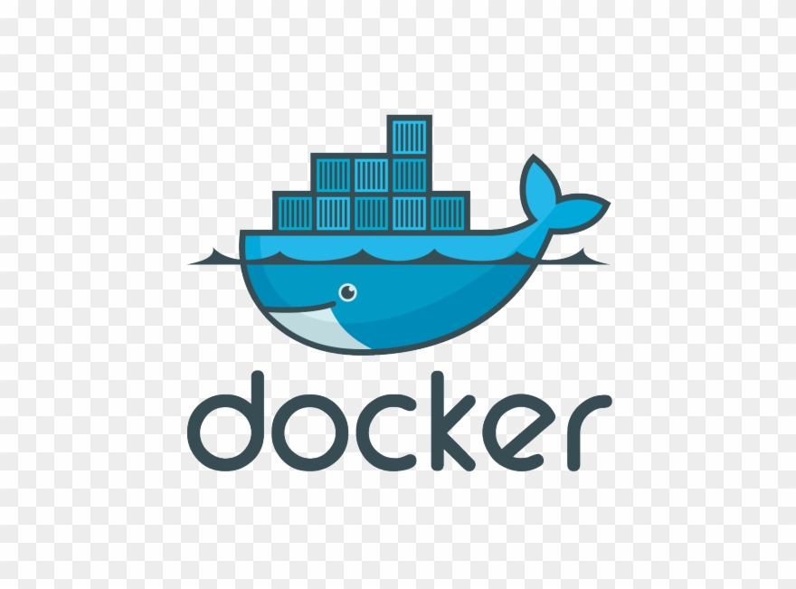
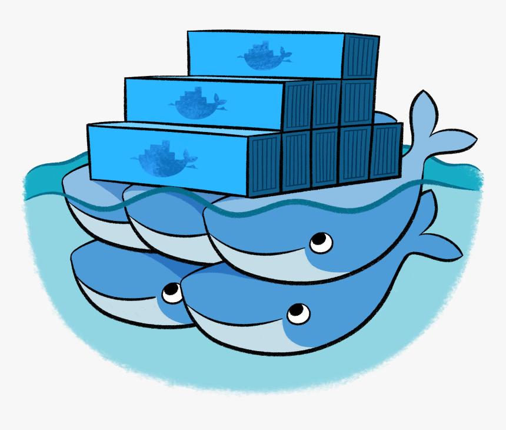

Docker & Kubernetes 101 - Part I
|
|
Rise of a Little Whale
|
|
- by Kevin Lin
This is not a training course, actually you probably won't know how to setup a local Kubernetes cluster Just to share a bit of my own background, 10+ years in Java development, enterprise applicatin development Move to modern JavaScript development 5 years ago. Doesn't know docker/kubernetes at all 1.5 years ago. As a project team, every engineer should know the basics of docker/kubernetes Raise interest to inspire some of you to take up trainings Tell the story from a different angle, start with looking back in history first, looking at some core concepts in ...
Zuhlke Engineering Singapore
Exciting Age for Containerisation
- The world of Cloud Computing is fast evolving in recent years - Container technology is the future - Docker and Kubernetes are the driving force - Microservice architecture become widely accepted - Thriving ecosystems, active communities, huge developer interests
Zuhlke Engineering Singapore
> Cloud native technologies empower organizations to build and run scalable applications in modern, dynamic environments such as public, private, and hybrid clouds. > Containers, service meshes, microservices, immutable infrastructure, and declarative APIs exemplify this approach. > ... -- Cloud Native Definition by [Cloud Native Computing Foundation](https://www.cncf.io/)
Zuhlke Engineering Singapore
It all started, back in year 2013 ...
Zuhlke Engineering Singapore
Year 2013
- PaaS is the hot topic and just about to take off - Big players have gone through the conceptualization and user education part - Cloud Foundry, Pivotal, Red Hat, Heroku...
_
Docker was open sourced
- It took the PaaS industry by storm - The whole community quick shift behind docker, probably even to its creator's surprise - What did it do right?
In a chinese saying, this is a strike from a higher dimension
Zuhlke Engineering Singapore
What did Docker do right?
- Docker image - Build once, Run everywhere - An application archive including base OS and software dependencies - Perfect solution for application packaging - Developer friendly - Every developer can do DevOps now - Docker Hub - npm repo for Docker images
Zuhlke Engineering Singapore
Demo
docker run -it ubuntu
docker run -dp 80:80 gscho/linuxtweetapp
docker run -dp 80:80 dockersamples/101-tutorial
docker run -it ubuntu
docker run -dp 80:80 gscho/linux_tweet_app
docker run -dp 80:80 dockersamples/101-tutorialZuhlke Engineering Singapore
Virtual machine (VM)
runs a full-blown “guest” operating system
with virtual access to host resources through a hypervisor

Zuhlke Engineering Singapore
Container
runs natively on Linux
shares the kernel of the host machine with other containers

Zuhlke Engineering Singapore
Zuhlke Engineering Singapore
Container is a contained Linux process
Implmented using core Linux kernel features
1. Isolation (namespace) 1. Limitation (cgroups) 1. Simulation (fsroot)
Zuhlke Engineering Singapore
Isolation - Linux Namespace
Isolate what the process can see, so it lives in its own world
1. PID Mount Namespace 1. Mount Namespace 1. Network Namespace 1. User Namespace 1. UTS 1. IPC
Engineers at Google started the work on this feature in 2006, and was merged into the Linux kernel in January 2008. _
Limitation - Linux Control Group
Set a limit the resources (CPU, memory, I/O) a process can consume
$ mount -t cgroup cpuset on /sys/fs/cgroup/cpuset type cgroup (rw,nosuid,nodev,noexec,relatime,cpuset) cpu on /sys/fs/cgroup/cpu type cgroup (rw,nosuid,nodev,noexec,relatime,cpu) cpuacct on /sys/fs/cgroup/cpuacct type cgroup (rw,nosuid,nodev,noexec,relatime,cpuacct) blkio on /sys/fs/cgroup/blkio type cgroup (rw,nosuid,nodev,noexec,relatime,blkio) memory on /sys/fs/cgroup/memory type cgroup (rw,nosuid,nodev,noexec,relatime,memory) ...$ mount -t cgroup
cpuset on /sys/fs/cgroup/cpuset type cgroup (rw,nosuid,nodev,noexec,relatime,cpuset)
cpu on /sys/fs/cgroup/cpu type cgroup (rw,nosuid,nodev,noexec,relatime,cpu)
cpuacct on /sys/fs/cgroup/cpuacct type cgroup (rw,nosuid,nodev,noexec,relatime,cpuacct)
blkio on /sys/fs/cgroup/blkio type cgroup (rw,nosuid,nodev,noexec,relatime,blkio)
memory on /sys/fs/cgroup/memory type cgroup (rw,nosuid,nodev,noexec,relatime,memory)
...Zuhlke Engineering Singapore
Simulation - rootfs
Build the container image to make it behave like an isolated OS
Note: The Linux kernel of the host never change
1. Mount root folders: /bin，/etc，/proc 1. Sometimes, mount the full OS filesystem, i.e. Ubuntu16.04 ISO 1. Change root to the new process root folder 1. The filesystem changes are applied in layers
docker image inspect ubuntu:latestdocker image inspect ubuntu:latestZuhlke Engineering Singapore
Zuhlke Engineering Singapore
Docker Compose
- Allows you to define multi-container applications - or “stacks” - as groups of interconnected services that share software dependencies - define them in a central file docker-compose.yml - And run them and manage the entire lifecycle of your applications.

Zuhlke Engineering Singapore
Docker Swarm
- Enables central cluster management as well as the orchestration of containers - Master-slave architecture - At least one manager node and any number of worker nodes - Swarm manager is responsible for the management of clusters and the delegation of tasks - Swarm workers take over for the execution
Zuhlke Engineering Singapore
Docker & Kubernetes 101 - Part II
|
|
War on Container Orchestration
|
|
- by Kevin Lin
Zuhlke Engineering Singapore
The Competition quickly turn to Container Orchestration
1. Docker - Open Container Initiative (OCI) 1. Mesos - Apache 1. Kubernetes - Cloud Native Computing Foundation (CNCF)
Zuhlke Engineering Singapore
Docker
- Year 2014 - Docker was the leader in container technology - Docker Compose - Orchestration on multiple containers with dependencies - Docker Swarm - Container cluster manager - The company behind Docker dotCloud changed its name to Docker - Year 2016 - Docker embedded Swarm directly inside Docker Engine - Docker refused a bid from Microsoft to buy it for $4 billion
Zuhlke Engineering Singapore
Kubernetes - Cloud Native Computing Foundation (CNCF)
- Year 2015 - Kubernetes 1.0 released by Google - Contributed to the Linux Foundation as a seed technology - Cloud Native Computing Foundation (CNCF) was founded by Google, CoreOS, Mesosphere, Red Hat and others - CNCF attracts a fast growing container community around Kubernetes - CNCF incubate many popular open source projects like: Prometheus, Fluentd, OpenTracing, CNI, Istio
Zuhlke Engineering Singapore
And the rest is history
- 2015 - Kubernetes surpass Docker quickly, and never looked back - 2017 - Docker (open source project) renamed to Moby - Docker embedded Kubernetes in its own product - Current - The container ecosystem is build around Kubernetes
Zuhlke Engineering Singapore
What exactly is Kubernetes?
Zuhlke Engineering Singapore
Kubernetes is not a better version of Docker
- Container runtime agnostic - It uses Docker by default - Provide container orchestration like Docker Compose + Swarm - And much, much more
Zuhlke Engineering Singapore
Kubernetes is not just open source project
- Successor of Borg & Omega, Google's secret weapon - Designed to manage large-scale computing cluster, - That powers Google search, Gmail

Zuhlke Engineering Singapore
> “Operating system support for warehouse-scale computing”. PhD thesis, Chapter 2. -- Malte Schwarzkopf, University of Cambridge Computer Laboratory, 2015
Zuhlke Engineering Singapore
Zuhlke Engineering Singapore
Docker & Kubernetes 101 - Part III
|
|
Kubernetes - OS for the Cloud
|
|
- by Kevin Lin
Zuhlke Engineering Singapore
Kubernetes Recap
- Everything in Kubernetes are API objects - Master - Node - Pod - Deployment - Service - Secret - ...
Zuhlke Engineering Singapore
Zuhlke Engineering Singapore
Zuhlke Engineering Singapore
Prerequisite
- Working Dev EKS setup and kubectl cli is required. - Refer to [https://confluence.global.standardchartered.com/display/Frog/Setting+up+Development+Environment+for+EKS+on+Windows]().
Zuhlke Engineering Singapore
Deployment with Config Files
Generate Deployment Config File
Kubectl commands can be used to generate yaml files easily.
kubectl create deployment ... --dry-run=client -o yaml kubectl expose deployment ... --dry-run=client -o yamlkubectl create deployment ... --dry-run=client -o yaml
kubectl expose deployment ... --dry-run=client -o yamlZuhlke Engineering Singapore
Kube Config Example - Deployment
apiVersion: apps/v1 kind: Deployment metadata: labels: app: wealth-api name: wealth-api namespace: application spec: replicas: 2 selector: matchLabels: app: wealth-api template: metadata: labels: app: wealth-api spec: containers: - image: artifactory.global.standardchartered.com/frog/frog-wealth-sg:latest imagePullPolicy: Always name: frog-wealth-sg ports: - containerPort: 8080apiVersion: apps/v1
kind: Deployment
metadata:
labels:
app: wealth-api
name: wealth-api
namespace: application
spec:
replicas: 2
selector:
matchLabels:
app: wealth-api
template:
metadata:
labels:
app: wealth-api
spec:
containers:
- image: artifactory.global.standardchartered.com/frog/frog-wealth-sg:latest
imagePullPolicy: Always
name: frog-wealth-sg
ports:
- containerPort: 8080Zuhlke Engineering Singapore
Kube Config Example - Service
apiVersion: v1 kind: Service metadata: annotations: service.beta.kubernetes.io/aws-load-balancer-internal: "true" labels: app: wealth-api-svc name: wealth-api-svc namespace: application spec: ports: - port: 80 protocol: TCP targetPort: 8080 selector: app: wealth-api type: LoadBalancer loadBalancerSourceRanges: - "10.0.0.0/8"apiVersion: v1
kind: Service
metadata:
annotations:
service.beta.kubernetes.io/aws-load-balancer-internal: "true"
labels:
app: wealth-api-svc
name: wealth-api-svc
namespace: application
spec:
ports:
- port: 80
protocol: TCP
targetPort: 8080
selector:
app: wealth-api
type: LoadBalancer
loadBalancerSourceRanges:
- "10.0.0.0/8"Zuhlke Engineering Singapore
Videos
You can add videos to your slides, and control the layout just like you do with images.
Both local files and YouTube links playback.
Zuhlke Engineering Singapore
Control the playback by using:
* [autoplay] to start playing the video straight away * [loop] to loop the video * [mute] to mute the video
Zuhlke Engineering Singapore